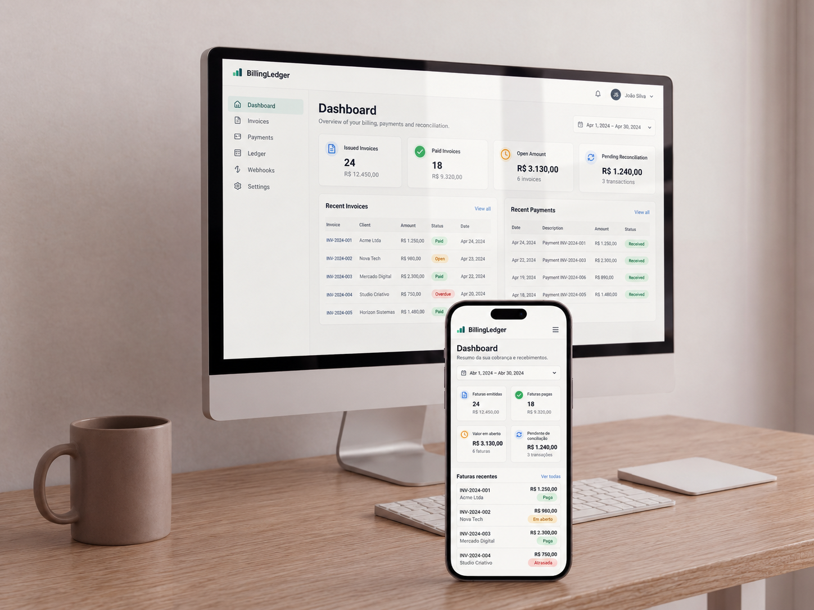

- Arquitetura
- Distribuída orientada a eventos
- Contextos
- billing · payments · ledger (schemas separados)
- Testes
- 39/39 testes de domínio no Billing
- Infra
- AWS CDK · ECS Fargate · SNS/SQS + DLQ
Visão geral
Sistema backend para emissão de cobranças, recebimento de pagamentos e conciliação em ledger. Modela o ciclo de vida de uma fatura (Draft → Issued → Paid/Cancelled/Overdue), recebe notificações externas de pagamento via webhook, processa o evento de forma assíncrona e registra os efeitos financeiros em um livro-caixa imutável.
O problema é típico de ambientes financeiros: separar as responsabilidades de faturamento, pagamento e contabilização sem acoplar tudo em uma única transação síncrona.
Arquitetura
Não é microservices puro nem monólito simples. A classificação precisa é: sistema distribuído orientado a eventos, em monorepo com bounded contexts separados e banco físico compartilhado com schemas isolados por contexto.
-
Billing.ApiAPI pública e contexto de faturamento. Aggregate root Invoice com regras encapsuladas. -
Payments.WorkerProcessamento de pagamentos com idempotência por (Provider, ExternalPaymentId). -
Ledger.WorkerMaterialização contábil: lançamentos de débito e crédito. -
ContractsContratos de integração versionados (V1) com EventId, CorrelationId e SchemaVersion. -
SharedKernel / BuildingBlocksPrimitivas, eventos de domínio e abstrações técnicas compartilhadas.
Fluxo de emissão, pagamento e conciliação
- Um usuário autenticado cria uma invoice pela API; o aggregate nasce em
Drafte umAuditLogé gravado. - Ao emitir, a invoice muda para
Issuede geraInvoiceIssuedDomainEvent. - Um interceptor do EF Core converte o evento de domínio em uma linha na tabela
infra.outbox_messages— na mesma transação da mudança de estado. - O
OutboxDispatcherServicepublica o contratoInvoiceIssuedV1. - O
Ledger.Workerconsome o evento e cria um lançamento de débito. - O provedor externo chama
POST /api/payments/webhook; a API valida a assinatura HMAC-SHA256 e publicaPaymentReceivedV1. - O
Payments.Workergrava oPaymentAttemptcom idempotência e publicaPaymentConfirmedV1. - O Billing marca a invoice como
Paide emiteInvoicePaidV1; o Ledger cria o lançamento de crédito e o saldo da invoice tende a zero.
Pontos fortes
- Domínio bem representado: aggregate
Invoice, regras de transição, domain events eMoneycomo value object. - Mensageria real na AWS com MassTransit sobre SQS/SNS.
- Outbox implementado exatamente no ponto mais sensível: a mudança de estado da invoice.
- Idempotência consciente, com índices únicos e guards nos consumers.
- Infraestrutura como código em CDK: VPC, RDS, Redis, ECS, ECR, SNS/SQS, DLQ e CloudWatch.
- Segurança baseline sólida: JWT + RBAC, webhook com HMAC, rate limiting, correlation id validado e segredos no Secrets Manager.
Limites e decisões conscientes
O que este projeto não faz, e por quê. Descrever isso com precisão vale mais do que exagerar o escopo.
- A arquitetura é layered + DDD-inspired, não Clean Architecture rigorosa: a Billing.Api concentra tudo no mesmo assembly e os controllers chamam repositórios diretamente.
- As pastas
Application/Handlersexistem, mas estão vazias — não há pipeline formal de casos de uso com MediatR. - A transição
Overduee o contratoInvoiceOverdueV1existem no domínio, mas não há job agendado nem consumer correspondente implementado. - Parte da arquitetura está mais madura no desenho do que na execução completa.